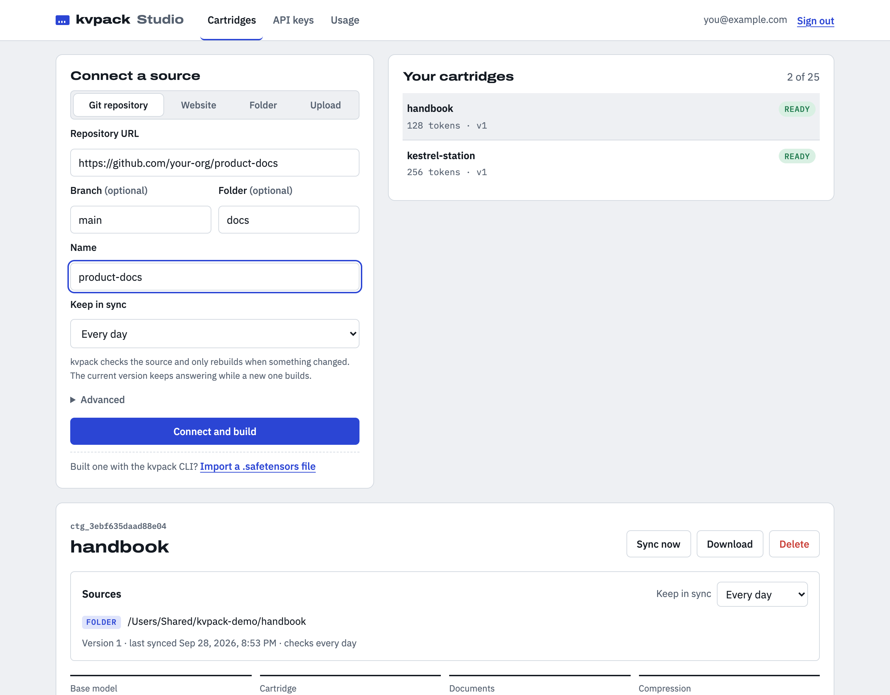

Docs, runbooks and code
A shallow clone of any https Git remote. Pick a branch or a subfolder. Private repositories use a token from an environment variable.
kvpack build https://github.com/acme/runbooks
kvpack turns a Git repo, a docs site or a folder into a cartridge: a small trained KV cache your model reads instead of a giant prompt. Build it once, keep it in sync, and serve it through an OpenAI-compatible API.
pip install git+https://github.com/Numoy/kvpack
The cartridge is a trained key/value cache that sits where the system prompt would be. The model reads it exactly as it would read a document.
A cartridge remembers its sources. Run kvpack sync from cron, or let kvpack Studio do it on a schedule: it checks the sources and rebuilds only when something changed, while the current version keeps answering.
A shallow clone of any https Git remote. Pick a branch or a subfolder. Private repositories use a token from an environment variable.
kvpack build https://github.com/acme/runbooks
The start page and every page linked below its path. kvpack uses the sitemap and respects robots.txt.
kvpack build https://docs.acme.dev/api/
Markdown, HTML, PDFs, code and plain text, skipping hidden and dependency folders.
kvpack build ./policies ./handbook.pdf
$ kvpack sync runbook.safetensors Fetched 1 document runbook.safetensors is up to date. $ echo "The Gondola now carries 8 people." >> runbook/manual.md $ kvpack sync runbook.safetensors Fetched 1 document Sources changed. Rebuilding with the original settings... Corpus: 2,360 tokens -> cartridge of 128 tokens Self-study ━━━━━━━━━━━━━━━━━━━━ 16/16 Training ━━━━━━━━━━━━━━━━━━━━ 2/2 Saved cartridge to runbook.safetensors
A real run, with a small test build. A running kvpack serve picks up the new file without a restart. More connectors (Notion, Google Drive, Confluence) are one class each: write one.
The model sees it all, but every conversation re-reads and stores the whole corpus.
Cheap per question, but the model only sees what the search step happened to find.
Trained once on the whole corpus into a compressed memory, then loaded in front of every conversation.
Every token in the context costs 128 KiB of KV cache on Llama-3.1-8B (32 layers × 8 KV heads × 128 dimensions × keys and values × 2 bytes). Drag the slider to change the size of your corpus.
Each conversation also holds 2,000 tokens of chat. "Conversations per GPU" assumes an 80 GB GPU with 16 GB taken by the model weights. The cartridge's corpus coverage comes from training on all of it, not from holding it in the context.
These are the problems cartridges are designed for. Whether they solve them better than RAG depends on the model, the budget and the data, so measure it on yours with kvpack eval.
Ask which procedures changed between revision 5 and 7? and there's no single chunk to retrieve. A cartridge is trained on every section, so nothing depends on a search step picking the right one.
A definition on page 3 and the rule that depends on it on page 40 rarely land in the same retrieved chunk. The cartridge never splits the corpus at query time.
Embedding search matches wording. When a question uses different words from the document, the right passage can rank below the cutoff and the model never sees it.
No vector database and no ranking step. A cartridge is one .safetensors file that you load next to the model.
For exact fact lookup with a small model, RAG wins in our benchmark below, even with the same memory budget. It also wins if your data changes every minute or you need a citation to the source passage. A cartridge costs minutes to hours of GPU time to train, so it suits documents that change occasionally, get asked about often, and are served where memory per conversation or time to first token matters.
kvpack implements self-study with context distillation from the Cartridges paper (ICLR 2026). The model's weights never change. Only the cartridge is trained.
kvpack fetches your sources, shows the model a random chunk and has it write a question: a fact to recall, a section to summarize, data to extract. The model then answers with the chunk in view, and kvpack records its next-token probabilities.
kvpack build https://github.com/acme/docs
The cartridge starts as the real KV cache of the corpus's opening. For each practice question, the model sees only the cartridge, and gradient descent updates the cached keys and values until its answer probabilities match the recorded ones.
kvpack sync docs.safetensors
The cartridge replaces the system prompt. Chat with it in the terminal, compare it against the full document, or serve it behind an OpenAI-compatible API where each cartridge is its own model.
kvpack serve docs.safetensors
Qwen3-0.6B on an M1 Max. We packed a 2,341-token fictional manual into 256- and 1,024-token cartridges trained on 384 practice conversations, then asked 28 questions, each graded by the facts a correct answer must contain. RAG uses BM25 retrieval; "cartridge + 1 chunk" gives the model both.
| Setup | Correct | Context held | KV cache | Time to first token |
|---|---|---|---|---|
| Full document | 25/28 | 2,341 tokens | 256 MiB | 1,129 ms |
| RAG, 4 chunks | 24/28 | 1,006 tokens | 110 MiB | 448 ms |
| RAG, 2 chunks | 25/28 | 507 tokens | 55 MiB | 273 ms |
| RAG, 1 chunk | 24/28 | 255 tokens | 28 MiB | 162 ms |
| Cartridge (256) + 1 chunk | 25/28 | 506 tokens | 55 MiB | 207 ms |
| Cartridge, 1,024 tokens | 16/28 | 1,024 tokens | 112 MiB | 81 ms |
| Cartridge, 256 tokens | 12/28 | 256 tokens | 28 MiB | 85 ms |
| No context | 0/28 | 0 | 0 | 41 ms |
On its own, a cartridge is the fastest setup that knows the document, but at this tiny scale it recalls fewer facts than RAG. Together with one retrieved chunk it matches the full document and the best RAG setup (25/28) with a fifth of the full document's memory. The paper's results come from 4B–8B models and thousands of practice conversations; we'll publish larger runs here. Every command is in the README.
Studio is the same engine with a web app on top. Connect sources, watch builds, try cartridges in a playground, and hand out API keys. Every cartridge is a model name in an OpenAI-compatible API.
kvpack serve.# one GPU machine
cd studio && uv sync
uv run kvpack-studio serve --host 0.0.0.0

# install pip install git+https://github.com/Numoy/kvpack # a repo, a docs site or a folder in, a cartridge out kvpack build https://github.com/your-org/handbook --model Qwen/Qwen3-4B # how does it do against RAG on your questions? kvpack eval handbook.safetensors --docs https://github.com/your-org/handbook -q questions.jsonl # serve it behind an OpenAI-compatible API, and keep it fresh kvpack serve handbook.safetensors --port 8000 kvpack sync handbook.safetensors